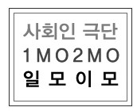

About 일모이모
대학시절, 연극이 재밌어서 일단 모였는데,
이제 뭐하나 생각하는 사람들
업이 될지, 취미가 될지는 모르지만
연극 한편씩 올릴 때 마다 답을 찾을 것 같다
극단 일모이모 연혁
2012. 10.
고려대학교 영문학과 연극반 OB 연극회 "프로젝트 V" 결성
2012. 11.
2012.11.22 첫번째 공연 연극 [서울하늘에도 오로라가 뜰까요?-원작 Almost main] 공연
고려대학교 학생회관 6층 무료공연
2013.05.
두번째 공연. 연극[오월엔 결혼할꺼야]
고려대학교 학생회관 6층 무료공연
2015. 12.
연극반 OB 연극회 "프로젝트 V" 에서 극단 일모이모로 개편
사회인 극단의 기틀 마련
2016.02.14.
극단 일모이모의 세번째 연극 [단편 희곡 릴레이 4편]
서울연극센터의 "10분 희곡 릴레이" 작품 중 4편 선별하여 공연
"외박", "혀", "bye June", "경찰의 고깃집"
2016.12.03
네번재 연극 [택시 드리벌] 공연
신림역 작은따옴표 2호에서 공연
2018.02.10
다섯번째 연극 [CLOSER] 공연
혜화역 1번 출구 세종문화센터 공연, 연극 무대를 대학로로 넓힌 첫 공연
2019.01.25 - 01.26
여섯번째 연극 [자살에 관하여] 공연
예술공간혜화 (종로구 혜화로 10-3)